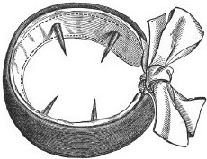
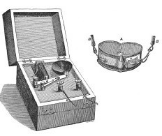
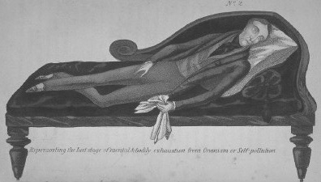

理查德·冯·卡拉夫特—艾宾，《性变态》（1886年）
性的科学
基督教将性宣布为原罪，这赋予了性以一种特殊的地位，性由此被牢固地钉在基督教道德的中心。历史与社会理论家福柯的《性史》中曾有一段著名的言论，指出了基督教道德的一个矛盾之处：在将性定义为不能提及的羞耻行为的同时，又称它是“至为高级”的罪，人们不仅要检视它的实际形式，也要检视自己脑海深处的欲望。随着天主教忏悔等仪式的逐步演进，宗教改革又敦促人们对自己的良心严格审视，基督教实际上创立了一种制度，即不断地对性进行反省，鼓励人们“供述”自己的性事“真相”。在基督教对性的道德贬低得以确立的同时，卡萨诺瓦、萨德、威尔克斯等作家，以及维多利亚时期《我的私密生活》的无名氏作者，却在书中大肆渲染他们的纵欲生活，且极尽细节。这看起来虽与时代精神冲突，但这股向公众坦白自己性事真相的潮流，本就是由基督教的忏悔模式引发的，从这一点来看，冲突就没有那么明显了。在近现代社会，这样的忏悔模式波及了社会生活的其他领域，如家庭、恋爱、医学、心理治疗、刑事司法、教育和传媒等。在这些领域，我们都被鼓励表达自己内心最深处的想法和欲望。用福柯的话来说，就是“我们从此变成了一个处在忏悔中的奇特社会”。
启蒙运动发起了对宗教教条的责难，基督教道德开始受到攻击。这时，性放荡主义文化开始在欧洲兴起，在17世纪之后更为明显，这一文化始于贵族精英阶级。在他们中间，羊肠做的避孕套和假阴茎同时流行起来。19世纪50年代以后，人们开始使用橡胶避孕套，当然其主要目的是防止男性从妓女那里染上性病，而这种避孕套对于工人阶级来说价格过于昂贵。堕胎术尽管遭到教会的反对，但在欧洲一直被广为认可，只要在妇女感觉到胎儿的生命存在，即“首次胎动”之前完成即可，一般是在怀孕的第四个月。堕胎的各种方法公开出现于19世纪的媒体上，堕胎业十分发达，直到19世纪晚些时候，大部分欧洲国家才开始采取管制措施，并宣布堕胎为犯罪。
这一时期，工业现代化的推进带来了剧烈的社会政治变化；与此相应，人们对于性的文化焦虑也进一步加强。在工业化（现代的、机械化的生产方式的发展）、城市化（工业化带来的城市中心人口比例的增加）和世俗化（近现代社会中宗教信仰的重要性的减弱）过程的联合作用下，产生了大量的城市人群。和以往任何现代化之前的传统社会相比，他们作为单独的个体所受到的社会和宗教控制都要更少。文学批评家史蒂文·马库斯就曾指出，在这样的情形下，19世纪存在着两种现象的结合：一方面，以城市地区为甚，地下卖淫活动和舞厅业十分发达，色情出版物数量激增并随处可得——这部分要归功于印刷业的发展；另一方面，人们在公开场合又必须故作正经，处于性压抑的状态。在这一背景下，人们认为现代化带来了公共和私人道德的堕落，这加剧了人们的集体不安。道德改良团体将性放荡主义描绘为对社会秩序和宗教的祸害，很多的医学文献和指导人生的书籍都警告人们：性和性传播疾病会对健康造成危害。
西方文化后来又对手淫或《圣经》中所说的“俄南之罪” [13] 产生了强烈的兴趣。最早引发人们关注的，是启蒙运动早年间（1712年左右）伦敦街头出现的一本无名氏所著的畅销小册子，名叫《手淫，或自渎的邪恶罪行，以及它的可怕后果，适用于男性和女性，并为那些因已采取这一可耻行为而受伤的人提供精神和身体指导》。作者宣称，他最初以为可以用精神指导劝说人们放弃这一“与自我的肮脏交易”，但却渐渐发现，自己无意中发明并以高价出售的含有“猛烈药剂”和“强劲粉末”的药方，对此类行为产生的医疗效果，要比精神劝服好得多。虽然只是江湖庸医的言辞，但这本书却有着重要的意义。托马斯·拉克尔在《孤独的性：一部手淫文化史》（2003年）一书中提到，它改变了以往宗教对于手淫的理解，认为它不是一个道德缺陷，而只是一种因忽视“自渎”给个人健康带来的可怕后果而引发的医学问题。随后，启蒙运动的代表人物热切地接过了这一话题。18世纪的瑞士名医塞缪尔·蒂索曾于1760年出版了广为流传的《俄南癖》一书。由于此书的影响，启蒙运动的卓越科学典籍、狄德罗主编的《百科全书》，也将手淫这一话题收录其中。伏尔泰也抓住蒂索将手淫医学化的契机，进一步攻击神职人员，认为违背天性的禁欲，让他们对这样的一种私下乐趣情有独钟。卢梭在其旨在教育青年人的著作《爱弥儿》（1762年）一书中，也同样对这一行为的可怕后果提出了警戒。
手淫一直被认为和很多顽疾有关，比如精神疲劳、视力模糊、记忆力差、失明、风湿、痛风、疯癫、淋病、癫痫、性无能和各种性偏常。到了19世纪中期，医学上有了“遗精”这一概念，其症状包括神经性无力和整体功能丧失，原因就是手淫让人失去了“过多”的精子。对抗手淫的活动也应运而生，人们提出各种治疗方式，包括休息、登山、泡健康温泉、剧烈运动、洗冷水澡和用贞节带，甚至运用复杂的电气设备对手淫者进行电击，使其放弃手淫的念头。
女性的手淫则被看作更加不正常，因为在当时的环境下，关于女性性存在的正统观念认为，女性比男性的“兽欲”要少。而且，当时的观念是女性的体质比男性的要虚弱。因此人们认为女性手淫对其健康的威胁更大，针对其进行治疗的极端手段常常包含手术，如阴蒂切除术（将女性的部分或大部分生殖器官切除）。更多的人则认为，不仅成年女性，而且少年人（不论男女）更热衷于手淫。这也反映了当时人们的一种臆测，即儿童因为受教育较少的缘故，比成年人具有更多的本性，是对性更具有欲望的生物，必须通过教化来监控他们的性欲——弗洛伊德对于童年性欲的解读则更为极端，进一步强调了幼儿的性欲本质（见第49页）。

带有四根尖刺的阴茎环


维多利亚时代对抗手淫的工具：阴茎环。对手淫者进行电击的机器。一幅警示手淫危害身心的宣传画。1845年起。
16世纪给女性用的带挂锁的贞节带。维多利亚时代的贞节带也是依据此类款式制成的，但其目的不是为了防止女性不忠，而是为了不让她们手淫。
在前工业化时代的欧洲社会，性行为主要属于道德和宗教问题，被归入与罪恶有关的范畴。但从18世纪晚期以后，近代思潮带来了社会变革，启蒙运动又促使人们远离宗教蒙昧主义，向宗教和理性这一对双生女神迈进。这让人们开始以新的方式对性进行思考，将其纳入科学研究的对象范畴。对于性的现代化解读，可以追溯到19世纪末20世纪初关于性的科学（“性学”）的诞生。性成为了科学研究，特别是医学和社会学研究的对象。达尔文主义对新生的社会科学学科产生了举足轻重的影响。达尔文认为“性选择” [14] 是进化的关键，这一观点成为现代性科学发展的主要推动力。基于性选择这一概念，科学家们开展了一系列的研究，一开始便从遗传、退化、种群等问题入手。性研究的另一个主要驱动力是人们对于公众健康问题的日益关注，其焦点是卖淫活动、个人卫生和性病。性研究发展的同时，国家对于性行为的干预也日益增多，两者密不可分。这体现了当时的社会和政治焦点，以及当时主要依据阶级和性别而形成的社会等级关系。
在这一背景下，性存在的概念诞生了。根据《牛津英语词典》，“性存在”这一名词在1879年进入了英语语言，其当代意义是“对性能量的拥有状态，或对性进行感受的能力”。法语中首次出现与此相对应的概念，是名不见经传的小说家佩拉当在他1884年出版的色情小说《至恶》中写过“如酗酒的野兽般的性存在”这样的句子。性存在这一新概念，将性严格限定在自然和生物范畴，认为它既是一个科学研究领域，也是一种主观经验。性学将性纳入身体和精神疾病与退化的医学分类范畴，取代了以往宗教不加区分地将性归入罪恶的做法。在这一过程中，性的社会意义大为改变。正如社会学家杰弗里·威克斯所说：
在整个19世纪和20世纪，性存在的各种生物模型主宰着性科学。这些模型将性行为概念化为自然的、生物的欲望的结果，这些欲望是形成各种社会经验的基础。人们将繁殖后代的本能假定为生物的自然本质形态，并根据是否符合这一标准来定义性常态和性变态。当时的人们将性看作一种本能的、具有巨大潜力的力量，认为其有引发社会秩序混乱的可能。两位19世纪的苏格兰生物学家格迪思和汤姆森因此提出：“对于性当中的爆发元素，要引起警觉，这种爆发元素藏于我们的本性的其他方面之中。正是出于这个原因，它即使不对我们的本性造成毁灭，也会令它根基不稳。”因此，他们认为，社会应当通过道德管制、性教育和立法，对性本能加以监督。
性学的先驱们，诸如德国的布洛赫、卡拉夫特—艾宾、赫希菲尔德、韦斯特法尔、罗勒德、莫尔和弗里德兰德，奥地利的司特科，法国的费雷和图瓦诺，瑞士的福雷尔，匈牙利的卡安和英国的埃利斯，都热衷于对偏离性常态的行为贴标签和分类，以此来研究“性反常”。他们创制了对“变态”类型的广泛分类，这些分类不但前所未闻，且愈来愈怪异，其中包括恋物癖、施虐受虐狂、异装癖（又称男扮女装癖）、雌雄同体、摩擦淫（摩擦他人）、粪便嗜好症（从排泄物中获得性快感）、恋尸癖（通过与尸体性交产生性快感）、水恋（通过水产生相关的性快感）、嗜痛癖（通过遭受或体验疼痛产生性快感）和尿色情（通过排尿产生性快感）。卡拉夫特—艾宾颇具影响力的性变态医学手册《性变态》（1886年）中曾记录了相关病例史，《英国医学杂志》的一位书评者在评论这些病例史时，认为性学者们总爱描述“最恶心的细节”。以这样的方式，性学在欧洲成为了一门跨越国别的新科学。不过，它并未形成一个内部整齐划一的学科。相反，它将代表不同组织和政治主张的科学家们重组在一起，因此性学的内部和外部都充满了争议。外界对性学的评价褒贬不一。埃利斯和布洛赫早期的作品曾被斥为淫秽作品。卡拉夫特—艾宾在《性变态》一书中描述一些性行为时，则富有策略地采用了拉丁文书写（当时曾有传闻，他这本畅销书出版之后，德国拉丁文词典的销量急剧上升）。
性存在与性别差异
性存在这一生物模型的重要特点之一，是将性别差异纳入了生物学范畴。传统的观念持“单一性别”的观点，认为女性的身体和男性的类似，只不过比男性的低级（认为女性生殖器只是男性生殖器的一个内部缩小版）。但自18世纪开始，这一观念被新的看法所取代，即男女之间具有明显的生物差异。人们开始认为女性身体的生物属性从本质上与男性的不同，而不是男性身体的低级形式。不过，性别高下的观念仍在延续。产生这一观念的原因有很多，比如人们会将女性特征与母性特征混为一谈。如19世纪的英国进化论者赫伯特·斯宾塞所说，女性之所以在智力上低于男性，是因为她们比男性更早地停止了进化，为了要将自己的能量释放出来完成繁衍后代的任务。又比如人们相信，所谓男性与女性的“细胞新陈代谢”存在着本质的区别，生物学家格迪思和汤姆森便是这一观点的有力代表。再比如随着19世纪末20世纪初荷尔蒙的发现，人们又相信男女之间的荷尔蒙有着根本的不同。这一时期，女性在生物上比男性低级这一理由，仍然是一项法律依据，继续将女性排斥在公共和政治领域之外——虽然这样的排斥遭到了越来越多的反对。不过同时，正像拉克尔所说的，人们也开始以新的视角看待自己的身体，这也让他们对性有了新的理解。人们不再将性看成是伴侣之间冷与热、主导与被动的接触，而是将其看作男人和女人这两种截然不同的生物之间的互动行为。
这时的人们认为，男性与女性之间所具有的、内在生物属性的差别，合理地决定了他们所要担当的不同的社会角色，也导致了他们会具有不同的性举止和性需求。男性的性存在被认为应当天生是进攻式的、强有力的，而女性的性存在则被认为是对男性性欲的回应，受繁殖后代和母性本能的驱使。虽然哈洛克·埃利斯等一些性学家强调女性的性存在十分重要，满足的性生活对于女性的幸福生活也十分关键，但19世纪的英国医生威廉·阿克顿的说法则代表了当时公众中的主流观念：
性学家的文字常常反映出了当时的双重性道德，他们笔下的“正常”女性是被动而贞洁的，天生喜欢一夫一妻制，而男性则淫乱不堪，用卡拉夫特—艾宾的话来说，这是出于“男性本质中对于性的需求”。因此，女性“过多的”性需求则被看成是不正常的。这样的观念导致在整个19世纪，被诊断为“女性歇斯底里症”的人数大幅增长。人们认为这是一种女性因过于热情而得不到性满足才产生的精神错乱。这样的女病人常常由医生来对她们的生殖器进行人工按摩，直到其出现“歇斯底里的痉挛”（现代术语将这种现象叫作“性高潮”）。与此同时，欧美国家的温泉浴中普遍提供水按摩器材，随着电在家庭中的普及，电动振动棒也成为了开始流行的用具。医生们倡议的另一种方法是实施阴蒂切除术。在整个英国和美国，都有诊所常年提供阴蒂切除术作为治疗歇斯底里症、狂躁症、白痴、精神失常、小便失禁等疾病的手段，比如建于1858年的“伦敦贵族上流女性可治愈外科疾病手术之家”就有此类手术。在英国，流传着关于手术功效的故事：1857年的新离婚法颁布后，一些女性要求和丈夫离婚，这种行为被认为是明显的精神疾病；但是，在接受手术治疗之后，这些女人便决定让步，并回到自己的丈夫身边。这样的故事表明，人们可以用切除生殖器作为手段，对非正常的女性气质进行管束。
然而，对于女性性存在的描写，也会因女性的社会阶级和种族而有所不同。在色情文学作品如约翰·克里兰的《法妮·希尔》（1748年）和无名氏的《我的私密生活》（1888年）中，工人阶层的女性和作为“他者”的外族女性都被塑造成可以随意与人性交、性欲难以满足的人，而妓女则通常被刻画为纵欲过度、身体糜烂的人。人们认为，越是在文明的程度上处于低端，就距离“原始欲望”越近——用瑞士性学家奥古斯特·福雷尔的话说，这解释了人们为什么一般都认定妇女“通常会比男人更容易屈从于自己的本能与习惯”。人们认为工人阶层的男性和女性、非洲人、亚洲人以及犹太人（犹太人被认为是一个单独的“种族”）身上的肉欲特征更为明显，也更容易进行“不文明的”、“堕落的”性行为。
在性学的历史上，女性的性存在一直被当作问题，备受关注。当然后来的性学研究出现了相反的趋势，认为女性缺乏性欲和性快感也是一种病态。美国性学家马斯特斯和约翰逊对人类性反应进行的著名实验便是其中一例。这项研究从20世纪50年代末期延续到20世纪90年代，对几百名男性和女性在手淫和性交过程中的生理反应进行了实验观测。和很多其他的性研究者一样，马斯特斯和约翰逊观察到很多女性在性交的过程中没有高潮，因此他们在出版于1970年的畅销书《人类性缺乏》中推介了一个新词语，即女性“性交高潮缺乏”。相对于异性恋男性的性存在而言，女性的性存在被定位为病态的性存在（尽管他们也观察到女性具有体验多次高潮的能力）。
异性恋与“性变态”
除了以生物的方式理解性别差异，性存在生物模型的另一个中心特征，是认定“自然”的性行为只包括对异性的性行为和性欲望。因此，人们将异性恋默认为标准范式，而其他行为，特别是同性恋，则被看成是对标准范式的一种偏离。现在已知的、在英语中首次采用“异性恋”一词的人是美国医生詹姆斯·G.基尔南，他在1892年的一本医学期刊上使用了这一词语，但是，他却用这个词来指为了享乐而非繁衍后代的目的、“通过不正常的满足手段”（能达到性欢愉却不致繁育后代的性行为）性交的“性变态”行为。将异性恋和对于异性的不正常（非繁衍性）的欲望相联系的趋势，一直持续到19世纪20年代。之后，人们才开始将不以繁衍为目的的对异性的渴求看作正常。
从性存在的生物模型出发的观点认为，进行变态性行为的人与其他人具有本质的区别。这是一个重要的概念革新，人们对于同性恋的看法可以阐释这一点。不可否认，同性之间的性行为在历史上一直存在，具体的行为，如鸡奸，则时而得到社会的容忍，时而遭到迫害（最严重的时期是18世纪）。但是，任何人都有从事这种罪恶行径的能力，是否从事这一行径只取决于他们的道德。福柯曾有段著名的言论指出，直到很久以后的19世纪，人们才逐渐产生了这种观点：从事“鸡奸”的人是一个单独的群体，不正常的生物本能使他们有着特殊的身份和倾向，导致他们采取了“同性恋”这一行为。用福柯的话说：
一些历史学家曾追溯这一转变的起源，认为其出现于中世纪晚期。他们指出自17世纪和18世纪以来，一种同性恋亚文化开始在欧洲的大城市中逐渐形成。虽然如此，我们比较确定的是，19世纪对鸡奸者的重新定义（认为这是一种不一样的人格），才意味着同性恋概念的诞生。一般认为，“同性恋”一词是由出生于维也纳的匈牙利记者卡尔—马里亚·柯本尼创造的。他在1868年给卡尔·海因里希·乌尔利克斯的一封信中首次使用了这个词。乌尔利克斯是德国人，曾较早地倡导性少数派的权利。后来，在1869年反对普鲁士针对鸡奸立法的一本匿名宣传册上，柯本尼又公开使用了这一词语。最初，柯本尼将同性恋的概念与“独性恋者”（手淫的人）、“异种恋者”（与动物性交的人）区分开来，也与异性恋、常性恋（对女人有兴趣的人）区分开来。在后一种区分中，柯本尼认为异性恋者或常性恋者具有强烈的性欲，比同性恋者或兽交者的性欲更强烈，这驱使他们沉溺于过度的堕落性行为，包括乱伦、攻击“男性，但更多的是女性未成年人”，以及“对尸体采取邪恶行为”。正如历史学家乔纳森·奈德·卡茨所指出的那样，“异性恋”的概念，是随着柯本尼倡导同性恋权利而诞生的，但后来这一概念的意义又转为标榜异性恋的生物自然性和道德高尚性了，因而是“性史上绝大的讽刺之一”。
“同性恋”一词通过卡拉夫特—艾宾的推介在德国流行开来，也由于埃利斯的使用，在英国得到了普及。《牛津英语词典》提到，查尔斯·吉尔伯特·查多克通过翻译卡拉夫特—艾宾的《性变态》一书，将“同性恋”一词于1892年引入了英语语言；而此前一年，一部医学书籍就已经把这个词引入了法语。“女同性恋关系”一词首次出现于1870年，一开始与“女子互奸关系” [15] 和“萨福关系” [16] 混用。而“同性恋”一词早期也经历了与其他词语的竞争。倡导性权利的先驱，德国人卡尔·海因里希·乌尔利克斯曾于1862年成立了一个叫“乌拉诺斯之恋”的团体。“乌拉诺斯之恋”借自柏拉图的《会饮篇》，在此文中，柏拉图对男神乌拉诺斯所象征的“崇高的”、“神圣的”、“成年男性对未成年男子的神圣爱情”大为赞颂。在德国和维多利亚时代的英国，浪漫主义者重新发掘了古希腊传统，在这一背景下，这两个国家的许多城市也涌现出其他意在颂扬男性之间的爱情和友情的乌拉诺斯之恋团体，这些城市包括牛津和剑桥。其他一些并存的术语还有“同性恋主义者”、“希腊式恋爱者”（虽然一开始是指与男童发生性关系，但渐渐也用来指男性之间的性关系）、“相反性取向”、“颠倒性倾向”、“性倒错”、“过渡性倾向”、“第三性别”和“乌拉诺斯恋者”（也是从“乌拉诺斯之恋”衍生而来的）。
“性倒错”这一概念在19世纪尤为盛行。这一概念描述的是当时人们的一种广泛认知：对同性产生性欲的人，是受到了某种性别倒错问题的困扰，他们是男人身体里的女人，或女人身体里的男人（虽然性倒错这一概念也涵盖了很多偏离常规的性别行为，比如男人着女装），甚至是第三种性别的人。人们广泛地运用性别这一放大镜来分析对同性的性欲，但针对性身份和性别之间的具体关系问题，人们的看法则不尽相同。那些支持“性倒错”一说的人认为男同性恋者是“被女性化”了，而支持希腊式恋爱模式的人则认为恰恰相反，这些人的男性特征处于过剩状态。19世纪末，随着德国的统一，同性恋在全德范围内被宣告为非法，随后便出现了世界上首次性少数派权益运动。到1902年，这一运动内部正是围绕上述问题产生了派别分化：马格努斯·赫希菲尔德捍卫第三种性别说，贝内迪克特·弗里德兰德则认为同性恋是“性别分化的进化阶梯上最高境界的、最完美的一级”，“性倒错的那一类”男同性恋者拥有过强的男性性征，他们比异性恋男子有着更高的领导能力和英雄气概。
在上述两种对立的观念下，同性恋的男子和女子都被视为区别于异性恋的、具有独立生物属性的个体。他们有特定的个性特征、服饰和体态，而且据称他们会广泛聚集于大都市的中心（随着城市化进程的加速，一系列的社会动荡随之到来。在这一背景下，人们认为，和简单、“自然”的乡村相比，城市化进程的加速特别容易滋生性变态行为）。
在性存在的生物模型下，同性恋者不再被视作罪人或罪犯，而是被视作不正常的人，需要进行治疗。虽然埃利斯等一些性学家认为同性恋是与生俱来的现象而非疾病，但大部分的性学家都将这种“边缘”的性存在视作一个问题加以研究。他们还在探究如何用心理治疗、化学手段和包括阉割在内的手术“纠正”他们所谓的病理现象。《美国精神病协会诊断和数据手册》一直将同性恋正式列为一种精神疾病，这一定义被用到1973年；而世界卫生组织则将这一定义一直用到1992年。后来同性恋维权团体和持不同意见的精神病专家均提出，真正的问题并不在于同性恋本身，而是在于对同性恋的仇视，英国、俄罗斯和中华医学会精神医学分会由此分别于1994年、1999年和2001年类似地废止了将同性恋者视为精神疾病患者。
以精神病学和性学的方法纠正和治疗变态性存在的做法广泛见于文献记载。比如，一些精神分析学家，如美国的山多尔·拉多等人，在20世纪40年代就曾提出偏离异性恋的变态行为可以被“摒除”。到了20世纪五六十年代，在苏联、英国、美国、加拿大和南非等国家，人们越来越多地采取厌恶疗法来“治愈”各种性变态者，如异装癖者、恋物癖者、变性者、男同性恋者、女同性恋者等。比起女同性恋者，男同性恋者更加频繁地成为治疗目标，因为这样的治疗常常是在罪犯服刑期间进行，而女同性恋者很少会被判刑。美国性学家马斯特斯和约翰逊在1968年到1977年期间着手进行了一个把同性恋者改造为异性恋者的项目，并宣布通过六年的治疗，成功率达到了71.6%。厌恶疗法包括向“病人”展示“不当的性物体”，比如他目前的同性爱人；再给病人注射阿扑吗啡之类的化学药剂，促使其恶心呕吐，或对其进行电击，在短短几个星期的时间内，这样的治疗常常每天要进行两次或更多次。
虽然性学家们自己常常鼓吹要对那些偏离了异性恋“正常轨道”的人们予以宽容，但他们的观念却整顿和强化了正在兴起的、对于性存在的约束。正如社会学家杰弗里·威克斯所说：
的确，很多性科学的先锋都是积极的社会改革家，他们认为性的改革与社会秩序的变革是紧密相连的。举例来说，这一点在奥古斯特·福雷尔、爱德华·卡朋特、哈洛克·埃利斯、理查德·冯·卡拉夫特—艾宾、马格努斯·赫希菲尔德和伊万·布洛赫等人身上都有体现。他们积极参与政治运动，争取性少数派的权益、和平主义和女性选举权等等。在这一更加广阔的社会运动的背景下，他们参与到同时代的、高度政治化的公众辩论中，其中包括了针对性改革、性教育和歧视性立法的辩论。很多早期的性学家都将同性恋视作尤其“无害”的现象，特别是因为像奥古斯特·福雷尔说的那样，“他们反正不会有后代”。卡拉夫特—艾宾和赫希菲尔德等作家也公开发声反对反鸡奸立法。
性革命
20世纪60年代，性的问题进一步政治化。弗洛伊德派的马克思主义学者如赫伯特·马尔库塞、埃里希·弗洛姆和威尔海姆·赖希等，提出性是一种自然的、积极的力量，但这种力量却受到了资产阶级掌控下的资本主义社会的压制，他们呼吁能够改变社会秩序的性“解放”。威尔海姆·赖希是奥地利精神分析学家，20世纪二三十年代，他先成为奥地利社会民主党成员，后又加入德国共产党；四五十年代他移居美国，又成了共产主义的激烈批判者。赖希的早期作品最有影响力，在这些作品中，他试图在精神分析学说和马克思主义这两种理论之间寻找平衡。他参照了弗洛伊德学说对力比多（性能量）的强调，但却对弗洛伊德的理论提出了异议。弗洛伊德在《文明及其缺憾》（1915年）一书中曾明确指出，个体通过将力比多转移到生活中的其他方面来获得“正常”的成人身份。在弗洛伊德看来，正是因为本性受到了压制，文化才会发展；而赖希则认为，文化和本性，虽然在现代社会中呈对立关系，却应该取得妥协，达到和谐状态。赖希提出通过完全改变弗洛伊德关于性存在的学说来“修正弗洛伊德理论中的无意识学说”，并提出了他自己的“植物疗法”以及后来的“性经济”。他认为对自然的性能量的文化压制是导致所有神经症的病因。正如他在1948年所写下的：
赖希认为完全的“高潮能力”是一种“生殖器官的快感”，是一种生物性的能力，但他也指出这种让生殖器获得快感的天生的能力，已经被社会所毁灭。他宣称：“性经济学家懂得人类是唯一一种摧毁了自己的自然性功能的生物，这也正是人类的痛苦所在。”用他的话来说，性存在就是“生命的能量本身”，而且无处不在，因此性高潮能力的毁灭就显得尤为严重。实际上，赖希认为近现代社会中大部分人都饱受性压抑之苦，正如他所写下的：
由此，赖希在他最有影响力的几部作品中，分析了社会将个体变为神经症患者的各种方式。他首先将这种“大规模神经症”的病因归咎于资本主义，然后又归咎于专制社会。他在最后一部著作中又认为，罪魁祸首是任何压制生物性的生命能量的社会制度。他特别批评了化身为核心家庭模式的“专制主义强制家庭”制度，因为在赖希的眼中它复制了一个微型的国家专制主义机构，维持了父权制对于女性的社会压迫、经济压迫和性压迫。赖希反对强制的一夫一妻制，认为其制造了无数对不幸福的夫妇；他亦反对家庭内部妇女和孩子在经济上所处的从属地位，认为家庭是对儿童和青少年符合天性的性探索进行社会压迫的中心力量。赖希呼吁进行一场“性革命”，将性从被社会压迫的状态中解放出来——他认为，如果不彻底推翻当前的社会和政治秩序，这样的革命是不可能发生的。在1930年出版的著作《性革命》一书的第二版序言中，他写道：
赖希早期关于性经济的概念主要是性学和心理学方面的，到了后期，他将其修正为“奥根能量学”，即对于“生命能量”的研究。赖希于1939年移居美国后，在缅因州的郊区设立了一个叫作“奥根能”的研究机构。一直以来他都坚称“生殖器的性功能”是生命能量的中心源泉，此时他又宣布通过观察发现了所有生命的源泉：宇宙的奥根能。赖希从社会学和人类学的方法转向了自然科学的方法来研究生命能量，并且把“生命能量的粒子”叫作“生力”，把毁坏粒子叫作“死亡生命力”或“死力”，认为这些都可以通过实验观察到。他“发现”了无意识的化学分子式，发明了爆云器，声称其可以利用奥根能制造降雨。这些行为和言论均在挑战他最狂热的追随者对他的耐心。他最具争议的一项发明，是名叫“奥根箱”的能量聚拢器。他声称他可以向坐在这些箱子里的人输送宇宙奥根能。他宣布奥根能可以解放人们的“生物能量”，认为正是因为现代社会人们的生物能量受到阻滞，才导致了“高潮焦虑”以及包括癌症在内的一系列疾病。
不过，奥根聚拢器给赖希带来了麻烦，美国食品和药品监督管理局找上了他。因为奥根聚拢器宣称的医疗效果有欺诈的嫌疑，有关部门对此展开了调查。结果，食品和药品监督管理局对这一产品发起了正式的投诉，且一切有关“奥根能”的东西都遭到了法律禁止。赖希曾因违反这一禁令，在1956年被判入狱两年。他的书中一切与奥根能和聚拢器有关的内容都被禁止引用，与聚拢器有关的材料也被焚毁。他于此后一年死于联邦监狱。与当时的情形大为不同的是，现在，奥根聚拢器可以在网络上自由售卖。
由左翼弗洛伊德学派发起的、将性从资本主义和父权制的压迫下解放出来的呼吁，对20世纪六七十年代出现的左翼和女权主义运动，以及各种新的促进性能量释放的性爱疗法有着深刻的影响。它再现了对性存在的生物模型的理解，即性是一种被资本主义社会所压制的自然力量。
性的生物模型直到20世纪80年代之前都处于主导地位，直到今天，它仍然对性研究有着重要的理论影响，在现今性存在的进化论模型和基因角度的性研究复苏的背景下，其影响更为明显。举例来说，兰迪·桑希尔和克莱格·帕默所著的《一部强奸的自然史：性胁迫的生物基础》（2000年）与米歇尔·吉列里的《男人的阴暗面》（1999年）等书籍，将男性的性暴力，特别是强奸，概括为男性的进化本能传播其基因的结果，而海伦·费希尔的《爱的解剖：关于交配的自然历史和我们为什么有外遇》（1992年）一书，则是集中阐释了进化理论和生物理论对于两性差别的解释。不过，性存在的生物模型也遭到了来自各方的攻击，包括来自性学内部的。
对性存在的生物模型的挑战
虽然大多数早期的性学家都主要研究边缘的性现象，另一些性学家，特别是哈洛克·埃利斯，却主要研究“正常”的性行为。对于正常的性存在的研究，导致了人们对什么是生物的自然属性有了一些疑问。当时，人们仍然按照生物本质来理解性，但一些19世纪的性学家，如格迪思和汤姆森等人，却不由得注意到了所谓“自然”的性本能，实际上是千差万别的。即使是第一代的性学家也是一边接受了正统的性行为的观念，一边又部分将什么是性常态当作研究问题的。埃利斯提出，正常这一范畴反映的是社会的定义而不是自然的本能。而正常和非正常的性行为之间很可能有一片连续的中间地带，而不是简单地被一分为二。
后来的性研究包括了众多国家对人们的性态度和性行为的大规模调查和数据分析。其中最著名的例子是20世纪50年代金赛对1.2万名美国人的性行为所作的研究，以及海蒂对美国1.5万名男女20世纪70年代以来性经验的调查所作的系列报告。这些针对性态度和性行为的自然主义的量化调查的结果又一次显示：“正常”和“变态”的性存在之间的区分，不像人们曾经认为的那样黑白分明。特别是金赛的研究，在20世纪50年代初曾制造了尽人皆知的丑闻，因为研究披露了37%的男性受访者曾经与其他男性有过性关系并达到高潮，其中的大部分人都认为自己是异性恋者——这样的结果在当代对性行为的调查中再平常不过。这意味着已经不能再将同性之间的性行为视为少数病态人群的变态行为。性学史上一个重要的悖论由此产生，即性存在的生物模型用自然本能、正常和反常性现象、生物性的性别差异等概念来描述性现象，但同样的研究也使其所依赖的上述分类成为了问题。因此，对于性存在的生物理解受到了来自性学话语内部的挑战，而原本促成性存在的生物理解的，正是这样的性学话语。
性的生物模型受到的另一挑战，恰恰来自其竭力描述的对象。在性科学所划定的“边缘”性现象内部，人们开始对性的意义进行实验和论辩。正如杰弗里·威克斯所指出的：
“同性恋”或“女同性恋”等分类标签也在原先分类的基础上被修正，这些修正方式具有政治上的创意，我们稍后会谈及这一问题（见第105-106页）。
对性的生物模型的第三个主要挑战来自弗洛伊德。他发展了一套无意识冲动/力比多理论，认为性欲不可以被控制和克服，而是一直存在于男人和女人身上。在这一理论框架内，他将女性歇斯底里症描述为一种女性性欲本能受到不健康的压制后产生的症状。他所撰写的《性欲三论》（1905年）一文很有影响力，文中认为性不是一种预先拥有的、已经形成的自然本能（主体可以随后从中偏离），而是一种在儿童心理发展过程中逐步建立起来的冲动。弗洛伊德提出，使儿童的模糊性欲为社会所接受，是其成长为成年人的过程中的核心步骤。用弗洛伊德学派女权主义者朱丽叶·米切尔的话说：
弗洛伊德认为人类能动性被无意识的欲望所驱动，由此他将性存在置于中心的重要地位上，但他在对于歇斯底里症和神经症的个案分析中，已经偏离了生物学的解释，而是将人类文明与性压抑联系起来。
对性的生物模型的最后一个或许也是最大的挑战，来自20世纪70年代开始的一系列社会和人文学科领域中出现的反本质主义理论视角。这些新的理论模型认为性不是一个自然的或生物的概念，而是强调性经验的社会本质。其中，福柯的观点虽然颇具争议，却很有影响。在他的经典著作《性史》中，他将性存在描述为一个“历史的工具”，其根源可以追溯到18世纪。随后古典研究学者戴维·哈波林、文学批评家史蒂芬·希斯以及社会学家杰弗里·威克斯、肯·普卢默等人都提出了颇具影响力的观点：要将性存在作为一项需结合其历史和文化背景的经验来理解，而这一经验是由社会权力关系所决定的。这一性存在的社会模型出现之后，性身份就不再仅仅是自然本能的表达，而是社会和政治的产物。
在这样的背景下，说异性恋、同性恋、女同性恋，甚至性存在的概念本身诞生于19世纪，就不仅仅意味着这些名词产生于那个时代（虽然它们确实是产生于那个时代）；其更深层的意义在于，近现代社会的个体体验和理解性和身份的方式，受到了与性存在这一概念工具相关的核心元素的极大影响，其中特别重要的是“自然”的性本能观点，人们曾以为这样的性本能是两性差别和性身份概念的生物基础。
正如我们所看到的，西方对性的文化理解是由三种模型决定的：道德/宗教模型、生物模型和社会模型。虽然这三种模型在历史上出现的时间有先后之分，但我们仍然要强调的重要一点是，这三种模型仍然在当今的社会中并存。对性的道德、生物学和社会学的理解，在社会、政治和我们的日常生活对于性意义的阐释中，仍然有着举足轻重的影响。这三种模型对于我们如何理解自己的性行为和性身份有着重要意义，对于个体变化和政治变革的可能性也有着重要影响。